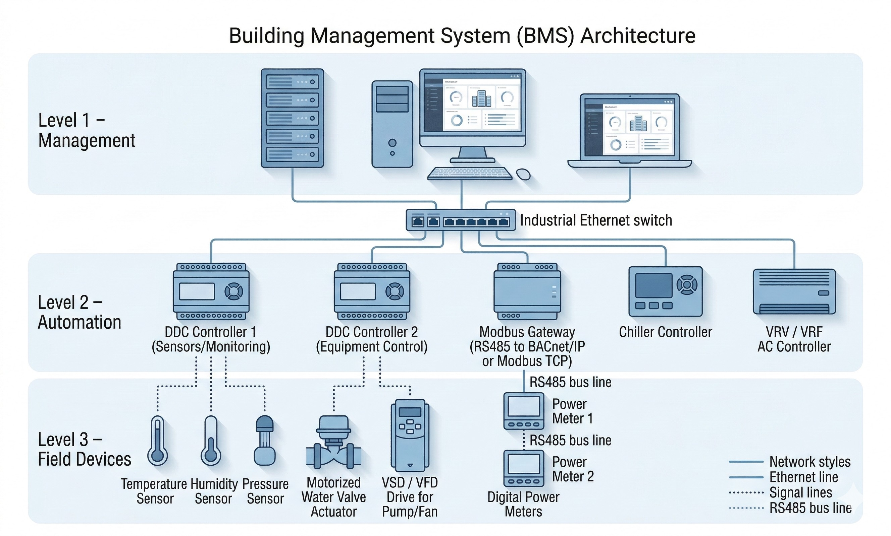
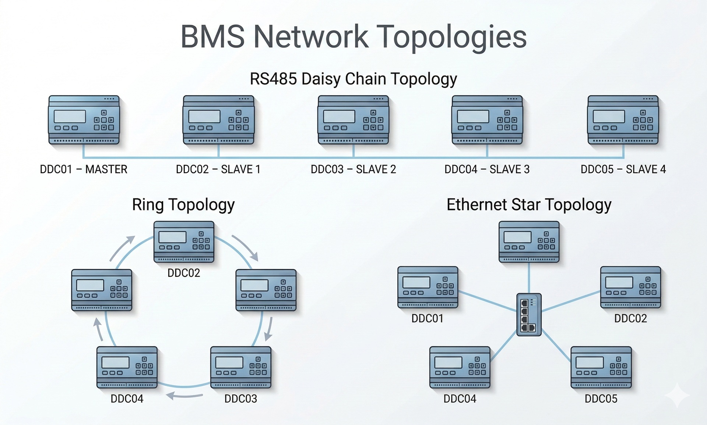

✖ Thiết bị cơ điện hỏng cũng đổ lỗi cho BMS điều khiển sai.
✖ Hễ thấy rớt mạng là vội vàng đi Reset phần cứng tủ DDC.
Cấu trúc phân lớp (Hiện đại)
1
Lớp Quản lý (Server)
Giao diện đồ họa, Database. Lỗi hay gặp: Đầy ổ cứng, sập nguồn UPS.
2
Lớp Tự động hóa (DDC)
Chạy logic tự động. Tích hợp sẵn truyền thông IP. Lỗi: Hết pin CMOS mất code.
3
Lớp Thiết bị trường (I/O)
Cảm biến, Van, Relay. Lỗi hay gặp: 90% sự cố (đứt dây, kẹt cơ, hỏng motor).

Thực Hành: Kiến Trúc BMS
❓ Chức năng "Stand-alone" (Độc lập) của tủ DDC thuộc Lớp Tự động hóa có nghĩa là gì trong vận hành thực tế?
❓ Khi màn hình BMS hiển thị [Offline] toàn bộ các tủ DDC thuộc hệ thống Chiller Plant ở tầng hầm, nguyên nhân có khả năng cao nhất là gì?
❓ Sự cố mất điện tòa nhà xảy ra. Máy phát điện đã chạy lại. Tuy nhiên, toàn bộ DDC vẫn mất kết nối và Server không thể truy cập Database. Nguyên nhân do đâu?
Bản Chất Tín Hiệu Số (Digital)
DO (Lệnh Điều Khiển)
Lệnh xuất từ DDC để đóng/cắt khởi động từ, rơ le.
Cách dùng VOM bắt bệnh:
BMS báo ON, đo điện áp tại ngõ ra DDC. Nếu không có điện áp -> Cháy rơ-le DDC.
DI (Trạng Thái Báo Về)
Nhận tiếp điểm khô (Run/Trip) từ tủ điện động lực trả về.
OFF (DỪNG)
Cách dùng VOM bắt bệnh:
BMS báo OFF sai. Tháo 2 cáp DI ra, dùng VOM đo Thông Mạch (Ohm) để kiểm tra.
Bản Chất Tín Hiệu Tương Tự (Analog)
Giả lập: DDC xuất 0-10V điều khiển Van
50% (5.0V)
0% (Đóng)100% (Mở tối đa)
📈 Đồ thị phản hồi nhiệt độ:
⚠️ Lưu ý cảm biến (AI)
Mua khớp Dải đo và Hệ số điện trở. Khai báo sai (PT1000 lắp NTC10K) sẽ báo sai lệch lớn.
🔧 Hiện tượng sụt áp (AO)
Cáp kéo quá xa (>150m) sẽ sụt áp 0-10V. Nên chuyển sang dùng tín hiệu dòng 4-20mA.
Phân Loại Thiết Bị Trường
Nhận diện chức năng thiết bị để tra cứu bản vẽ và xác định đúng loại tín hiệu I/O đặc trưng.
1. Cảm Biến
AI / AO
Đo lường giá trị thay đổi liên tục (Nhiệt, Ẩm, Áp suất, CO2) phục vụ vòng lặp điều khiển PID.
2. Công Tắc
DI / DO
Báo trạng thái Bật/Tắt (Flow switch, Công tắc chênh áp DPS) hoặc dùng làm điều kiện khóa chéo bảo vệ an toàn.
3. Đo Đếm
RS485 / IP
Đồng hồ điện năng, đồng hồ nước, BTU Meter phục vụ theo dõi năng lượng (chỉ số PUE của Data Center).
4. Van (Valve)
AO / DO
Điều tiết lưu lượng nước lạnh (CHW) hoặc nước nóng chảy qua các dàn trao đổi nhiệt AHU/FCU.
5. Actuator
AO/DO, AI/DI
Động cơ chấp hành (có motor bên trong) giúp đóng/mở cánh gió (Damper) hoặc xoay ty van cơ khí.
6. Contactor
DO / DI
Khởi động từ (nằm trong tủ MCC) dùng để đóng cắt nguồn điện động lực 3 pha cho Bơm, Quạt cấp/hút.
Cáp Tín Hiệu & Khối Lượng
1. Cáp Analog (AI, AO)
👉 Loại cáp: Cáp vặn xoắn bọc chống nhiễu (STP).
👉 Tiết diện: 1 Pair (18AWG - 22AWG).
⚠ Bắt buộc: Nối tiếp địa (Drain wire) chống nhiễu ở DUY NHẤT 1 ĐẦU.
2. Cáp Digital (DI, DO)
👉 Loại cáp: Cáp điều khiển (CVV) không cần bọc nhiễu.
👉 Tiết diện: Cáp đa lõi 4x1.0mm², 8x1.5mm².
Lưu ý: Dùng cáp đánh số (Marking) để dễ đấu nối.
🧮 Bóc Tách Khối Lượng Nhanh
L = (L_trục + L_nhánh + L_thả) x 1.1
Công thức tính chi tiết thi công thực tế (Cộng thêm đoạn thả trần + 10% hao phí).
Tổng cáp = Số I/O × 20m
Công thức tính nhẩm nhanh lập dự toán thầu.
⚠ Đừng quên cáp nguồn!Cảm biến Active (CO2, Temp/RH) hoặc Van tuyến tính cần cấp nguồn 24V. Phải bóc thêm dây nguồn 2x1.5mm chạy song song.
Thực Hành: Tín Hiệu & Cáp I/O
❓ Để kiểm tra Công tắc chênh áp (DPS) màng lọc AHU, kỹ thuật tháo 2 dây đi về DDC ra. Vặn VOM sang thang đo nào là chuẩn?
❓ Cảm biến nhiệt (AI) nhảy số loạn xạ (25°C -> 85°C -> -10°C). Cáp đi chung máng với nguồn 3 pha. Xử lý triệt để thế nào?
❓ Đo bản vẽ mặt bằng cáp AI từ DDC đến trần là 30m. Khối lượng cáp đặt hàng thực tế nên là bao nhiêu?
Topology Mạng Truyền Thông
═
Mạng Tuyến (Bus)
Nối tiếp (Vào-Ra). RS485.
Đứt giữa chừng mất toàn bộ phía sau.
✯
Hình Sao (Star)
Cáp quang/LAN tập trung về Switch.
Lỗi điểm nào khoanh vùng điểm đó.
⭮
Mạch Vòng (Ring)
Dự phòng cao cho trục Backbone.
Đứt 1 điểm, mạng chạy vòng ngược lại.

"Chuẩn" Vật Lý vs "Giao Thức"
Tránh nhầm lẫn: "Cắm cổng RS485 là Modbus chạy được". Đó là sai lầm.
Chuẩn Vật Lý (Đường lộ)
• Dây dẫn, giắc cắm, mức điện áp.
• Ví dụ: RS485, Cáp quang, Cáp Ethernet.
Chỉ chở dữ liệu, không hiểu nội dung.
Giao Thức (Ngôn ngữ)
• Cách đóng gói gói tin phần mềm.
• Ví dụ: Modbus, BACnet, LonWorks.
Thiết bị chung ngôn ngữ mới hiểu nhau.
💡 Rút ra:Chung sợi cáp RS485, nhưng Đồng hồ điện nói "Modbus" còn DDC cài "BACnet MS/TP" thì không thể giao tiếp nếu không qua bộ chuyển đổi (Gateway).
Modbus, BACnet & Tiêu Chuẩn Cáp
Cáp cho RS485 (Serial)
Giao thức: Modbus RTU, BACnet MS/TP
• Ứng dụng: Đấu VSD, Đồng hồ điện, VRV.
• Yêu cầu cáp vặn xoắn bọc nhiễu kép (120 Ohm).
Mẹo bảo trì: Lắp điện trở EOL cuối tuyến để giảm xung nhiễu tín hiệu chập chờn.
Cáp cho Ethernet (TCP/IP)
Giao thức: Modbus TCP, BACnet IP
• Ứng dụng: Nối mạng DDC với Server.
• Yêu cầu cáp mạng LAN Cat5e/Cat6.
Lỗi thường gặp: Trùng IP mạng, hoặc đặt Switch văn phòng vào tủ điện gây quá nhiệt.
Thực Hành: Truyền Thông
❓ 10 Đồng hồ nối mạng Tuyến RS485. Từ đồng hồ 5-10 báo mất kết nối. Kiểm tra vị trí nào?
❓ Vừa thay biến tần mới, cắm cáp A/B đúng nhưng vẫn Offline BMS. Nguyên nhân do đâu?
❓ Thiết bị RS485 dùng Giao thức độc quyền có cắm thẳng chạy với DDC Modbus RTU được không?
Nguyên Tắc 4 Bước Vàng Khắc Phục Lỗi
Trình tự "Cứng trước - Mềm sau" giúp bắt đúng bệnh, giảm Downtime.
1
Kiểm tra thực tế hiện trường
Van kẹt? Quạt rung lắc? Không xem phần mềm vội.
2
Đo đạc Tín hiệu I/O
Dùng VOM đo điện áp, thông mạch tại tủ MCC/DDC.
3
Khoanh vùng Lỗi
Quyết định do Cơ điện lực hay do bo mạch tự động hóa?
4
Phân tích Logic Phần mềm
Kiểm tra PID, giới hạn Setpoint, Alarm thresholds.
Downtime & Báo Động Giả
⛔ Tăng Downtime
❌ Nhảy cóc bước, ép Force phần mềm làm cháy thiết bị cơ.
❌ Bỏ qua Trendlog phân tích chu kỳ sập điều hòa.
🔍 Xử lý False Alarm
1. Xem lại vị trí Sensor vật lý.
2. Tăng tham số Time Delay.
3. Nới lỏng Limit Alarm đồ thị.
Thực Hành: Troubleshooting
❓ AHU báo RUN, setpoint 22°C nhưng phòng nóng 26°C. Bước 1 làm gì?
❓ Thông số nào chống cảnh báo ảo do độ trễ cơ khí khi quạt khởi động?
❓ Nếu kẹt ty van nhưng kỹ thuật viên ép (Force) phần mềm chạy 100% sẽ gây rủi ro gì?
🤖
Trợ Lý AI Phân Tích Sự Cố ✨
Mô tả hiện tượng lỗi (Ví dụ: "Phòng lạnh nhưng quạt chạy 100%"). Trợ lý AI sẽ gợi ý các bước Troubleshooting chuẩn T&C.
Đang phân tích dữ liệu...
Vận Hành An Toàn
🛡️ Tránh Sập Hệ Thống
1. Hiểu SOO: Đọc kỹ logic báo cháy trước khi test.
2. Test đơn lẻ: Thay đổi PID phải chờ 10 phút xem phản hồi.
3. Cấm tải Code: Không Download chương trình giờ cao điểm tránh Restart DDC.
📞 Báo Sự Cố Chuẩn Xác
Gửi Ticket yêu cầu nhà thầu cần đủ 4 yếu tố:
✔ Hiện tượng lỗi thực tế
✔ Thời điểm xảy ra lỗi
✔ Dữ liệu đo đạc (VOM)
📸 Ảnh chụp Trendlog/Alarm
Chống Vendor Lock-in
Đội ngũ vận hành BẮT BUỘC phải nhận bàn giao 2 nhóm hồ sơ sau để tự chủ hệ thống.
HARD-COPY
📘 Tài liệu Kỹ thuật
1. Bản vẽ As-built: Sơ đồ tủ DDC, P&ID.
2. Ma trận SOO: Logic điều khiển bằng chữ.
3. O&M Manual: Cẩm nang vận hành xử lý lỗi.
DATA
🔑 Dữ liệu Lõi
1. Mật khẩu Root/Admin System
2. Source Code DDC & Backup Database
3. Bảng Point List & IP Mapping
Bảo Hành & Bảo Trì Phòng Ngừa
BMS là "Hộp đen"
Dữ liệu lịch sử (Trendlog) giải quyết tranh chấp đổ lỗi. Nếu BMS phát lệnh ON nhưng 5 phút sau biến tần mới Trip, lỗi là do động lực, không phải BMS điều khiển sai.
Bảo trì phòng ngừa (PM)
Đếm giờ chạy (Run hours) bơm/quạt và theo dõi chênh áp màng lọc tự động cảnh báo lịch vệ sinh.
Khi nào gọi Nhà thầu BMS?
Chỉ leo thang (Escalate) khi: Lỗi PID phức tạp, mất kết nối cụm tủ lớn hoặc cần đổi logic SOO.
Thực Hành: Bàn Giao
❓ Truy cập BMS báo 'Access Denied' khi định đổi tên thông số. Do đâu?
❓ Nhà thầu không giao Source Code tủ DDC. Bạn có ký nghiệm thu (TAC) không?
📖
AI Tóm Tắt SOO ✨
Dán tài liệu Sequence of Operation (Tiếng Anh/Việt) để AI tóm gọn thành ma trận Logic chuẩn dễ hiểu.